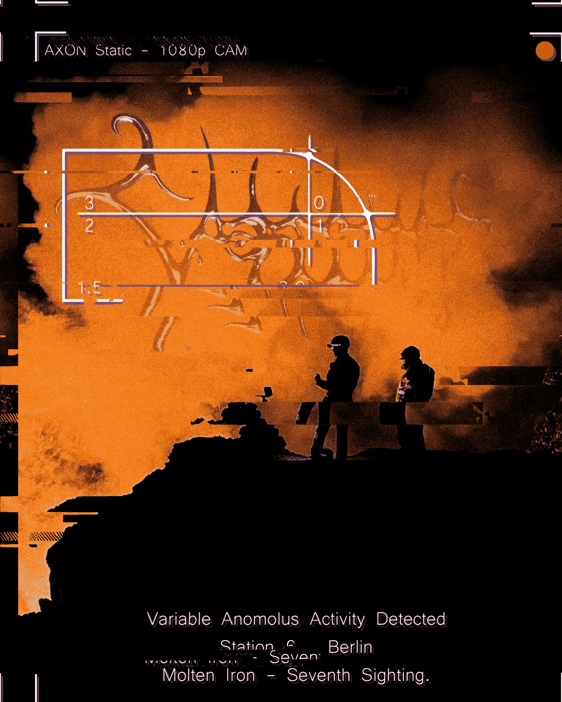
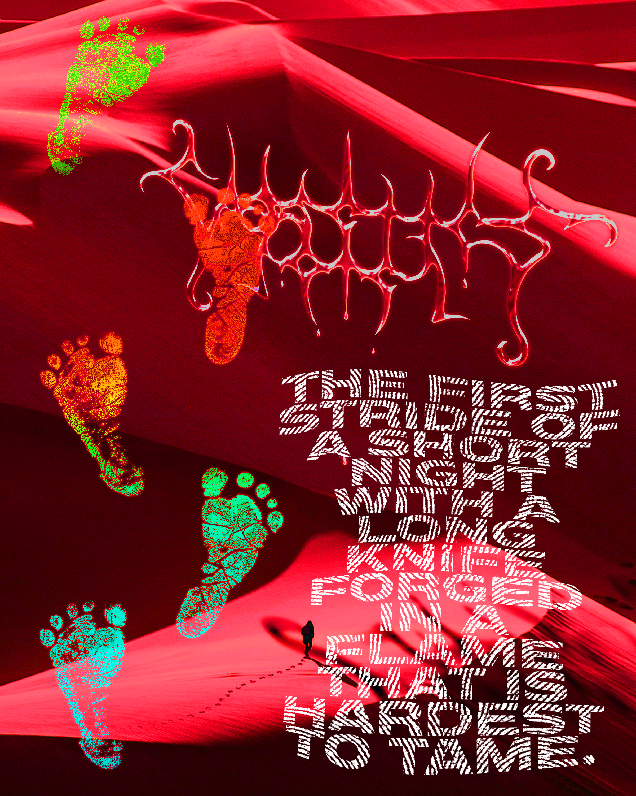
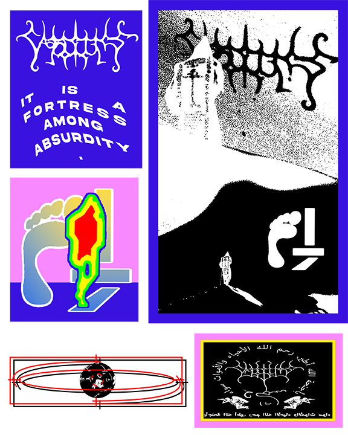
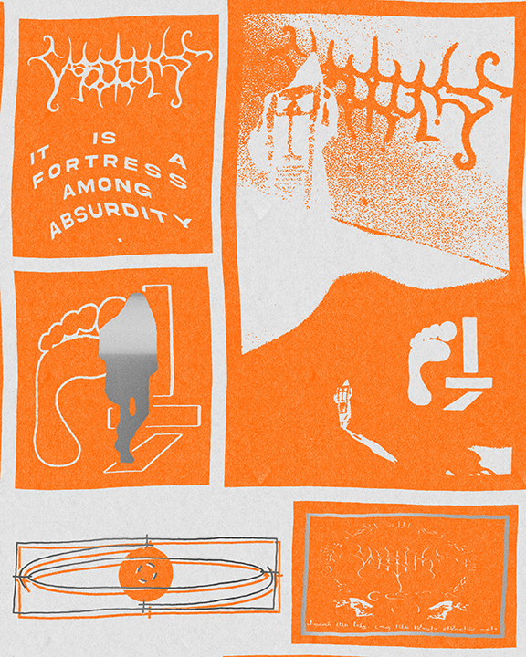
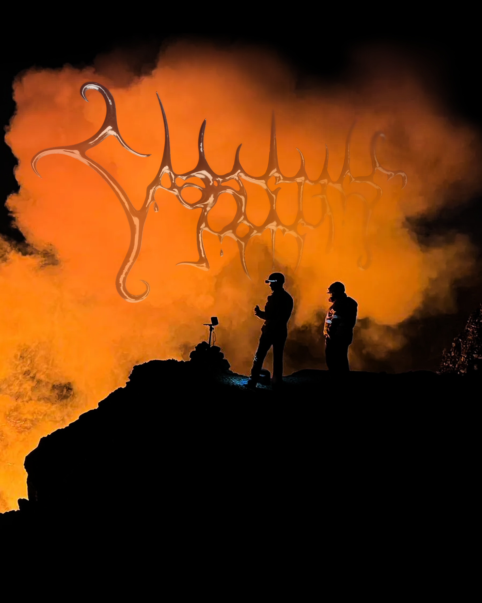
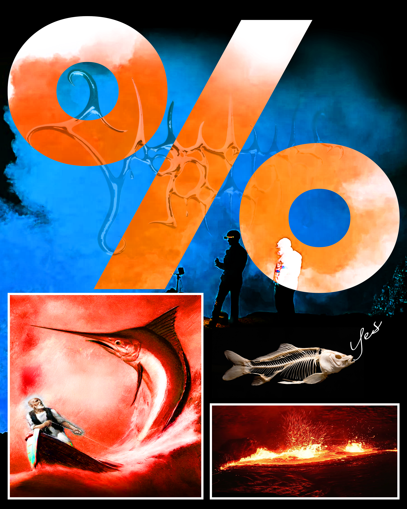

Namesake
Namesake is how I initially saw the Cassettes Hotel mark. I saw it as a being and an object rather than as a symbol or drawing.







Namesake is how I initially saw the Cassettes Hotel mark. I saw it as a being and an object rather than as a symbol or drawing.





